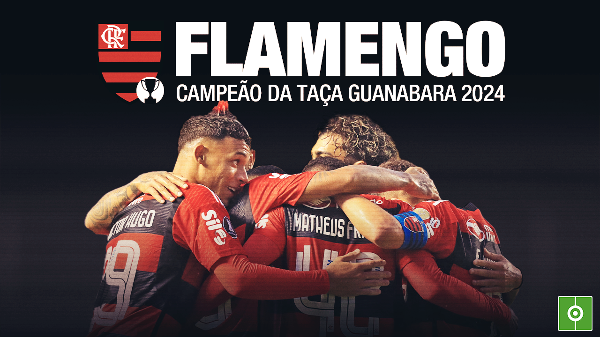

Fases finais dos principais campeonatos estaduais!!!
Flamengo campeão da taça GUANABARA com campanha invicta

- Para mais informações do flamengo segue o link
-
FLA
- Atletico Paraense é suurprendido, e perde jogo de ida contra o Londrina
CAP
- Corinthians esta FORA da fase final do PAULISTÃO
TIMÃO
- Quartas definidas no campeonato GAUCHO
GAUÇÃO
Informações copa do BRASIL
GE te atualiza!!!
Informações LIBERTADORES
Libertadores da América
POR HOJE É ISSO
Direitos de informações: GE e BEM PARANÁ